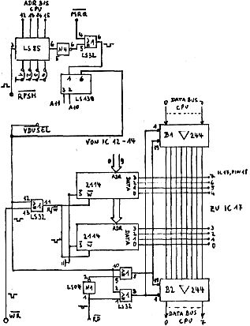

80-Bus Journal |
Juli/Aug. 1983 · Ausgabe 7/8 |
Die Karte ist hardwaremäßig dem Nascom-1 Schaltplan nachempfunden, als Speicherbausteine habe ich zwei 2114 verwendet. Die Adressdekodierung ist sowohl auf der Karte möglich (X800-XBFF) als auch über Pin 25a der Anschlußleiste in Verbindung mit der CPU-Karte. Die beiden gegenüberliegenden Lötpunkte (Leitung von Pin 25a zu Pin 6 des LS 139) sind hiezu zu verbinden, die beiden Dekodierungs-IC entfallen. Als Zeichengenerator ist derjenige vom 80-BUS Journal 3/83, Seite 10 zu verwenden, da lt. dem mir zu Verfügung gestandenen Nascom-1 Schaltplan die Belegung des Schieberegisters LS 165 leider spiegelverkehrte Zeichen erfordert. Ich habe in der Zwischenzeit einen ZG mit Schrift- und Grafikzeichen (N-2) erhalten und dabei festgestellt, daß diese Zeichen lagerichtig erzeugt werden. Durch die Dekodierung des Bit 7 auf der ECB-Video-Karte ist es möglich, anstelle des 2716 einen 2732 als Zeichengenerator mit Grafikzeichen zu verwenden. Hiezu ist lediglich Pin 21 des ZG mit 5V (2716) bzw. Bit 7-Lötpunkt (2732) zu verbinden.
Da ich mir vorstellen kann, daß zusammengesetzte Grafik mit den spiegelverkehrten Zeichen nicht zusammenpaßt, habe ich die beschriebene Hardwareänderung am Schieberegister auf meiner Karte durchgeführt. So ist es sicher günstiger, wenn man den Original Nascom Zeichengenerator (N2) einsetzt.
Das Schieberegister wurde inzwischen so belegt, daß der Original-Zeichengenerator (bzw. entsprechendes 2732) eingesetzt werden kann, ohne an der Platine herumzufummeln.
Bei der Schneebekämpfung habe ich allerdings keinen Erfolg gehabt, es ergaben sich noch störende Nebeneffekte. Muß sich halt jeder etwas selbst basteln, Platz für einen „Streifenkiller“ ist neben IC11 vorhanden.
4pol. DIL-Schalter, LS85 und LS139 entfallen bei Adressierung durch die CPU-Karte.
Die „c“ sind Abblock-Kondensatoren 10n bis 4,7µ (nicht kritisch).
IC 20 bis 28 entfallen;
IC 45 c,d entfällt;
anstelle ZG IC 16: EPROM 2716 oder 2732
(DB 7 bzw. +5V sind zu Pin 21 geführt,
Einstellung mittels Drahtbrücke).
Für UHF-Video Ausgang (ASTEC E 36) eigene Anpassung durch R8a 3,9K und R9a (für BAS-Ausgang bleiben R8 und R9).
Wenn gescrollte Zeile am Bildschirm ganz oben nochmals erscheint, dann IC 8 und 9 auswechseln gegen 7430 oder anderes Fabrikat (wurde auch auf original Nascom- Platine festgestellt).
Bitte melden Sie sich bei der Redaktion, falls Sie
Wenn zu wenige Interessenten für obige Möglichkeiten vorhanden sind, werden wir das Platinen-Layout im nächsten Heft abdrucken.
| Seite 29 von 52 |
|---|